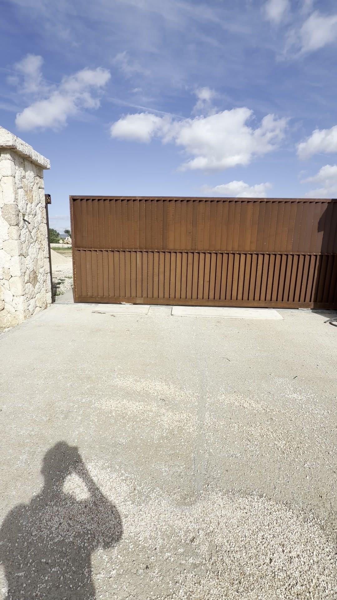
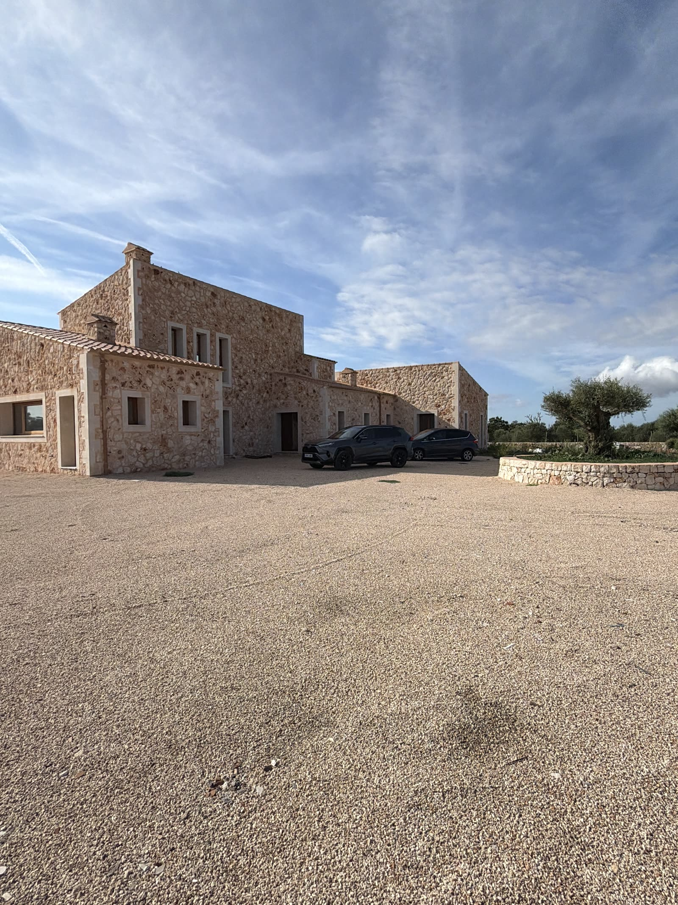
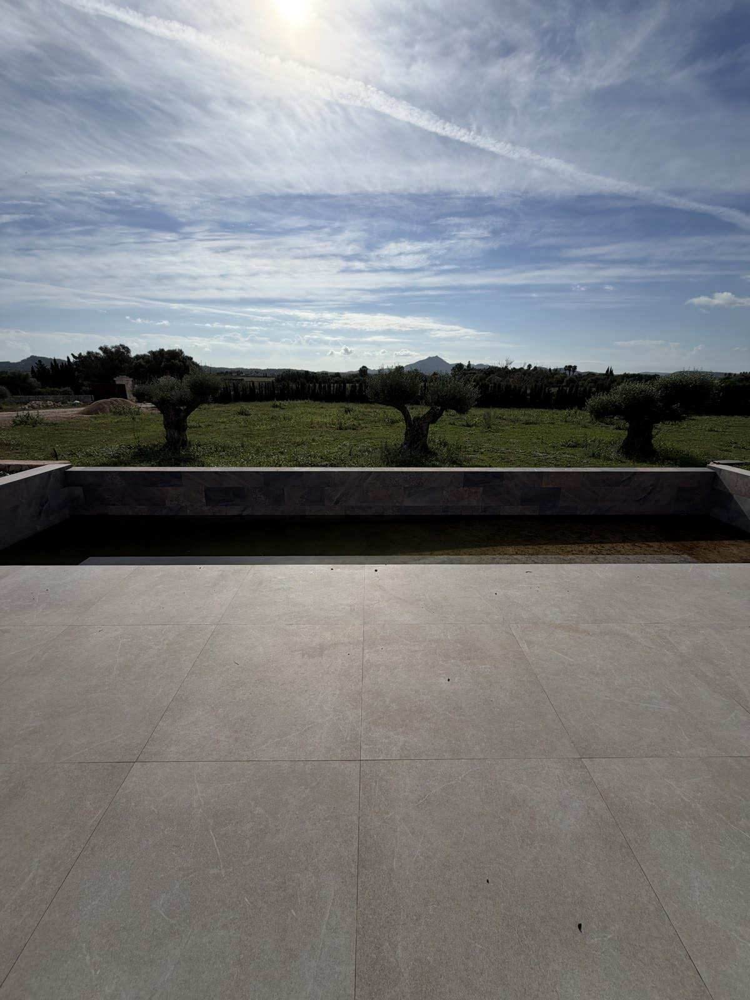
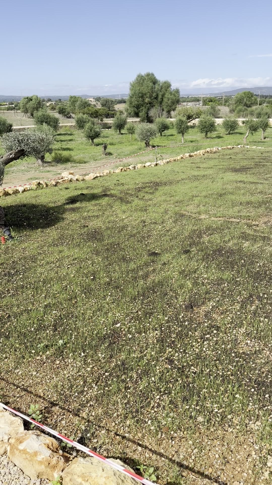
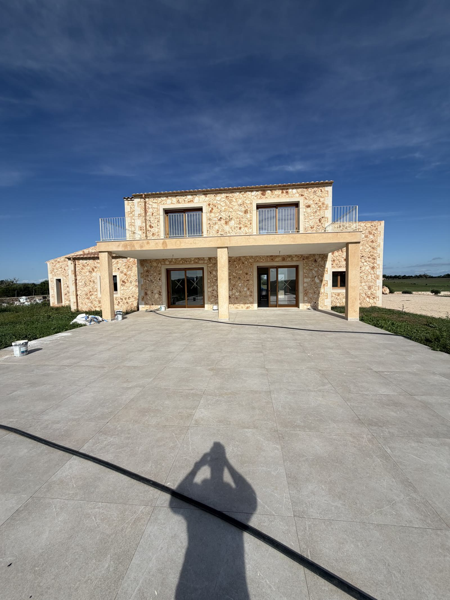
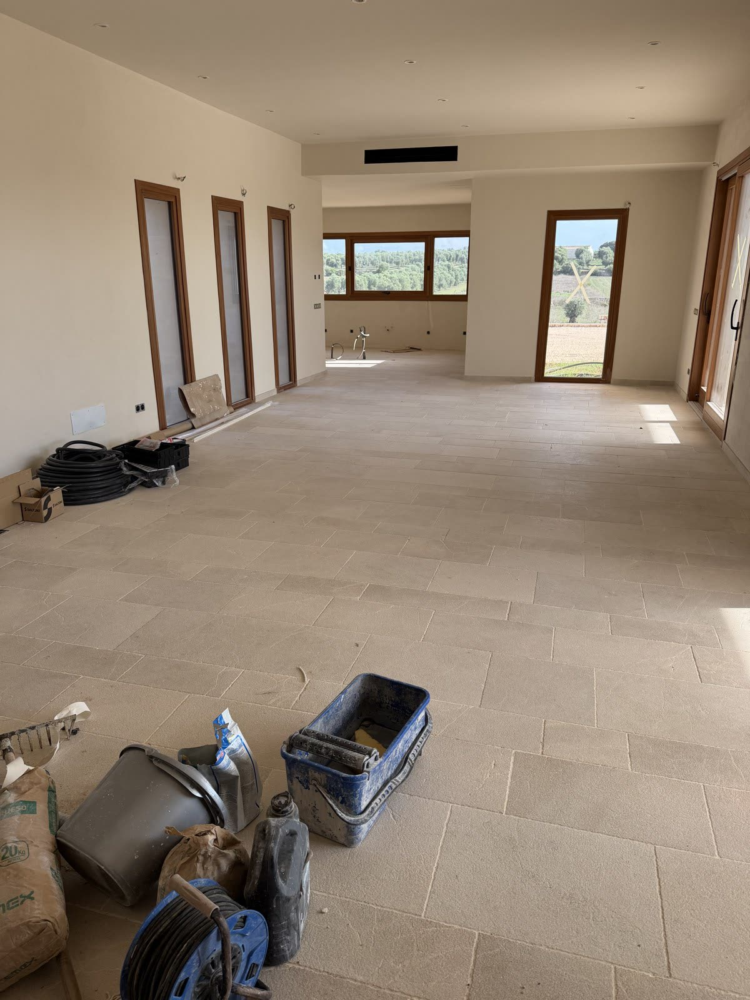
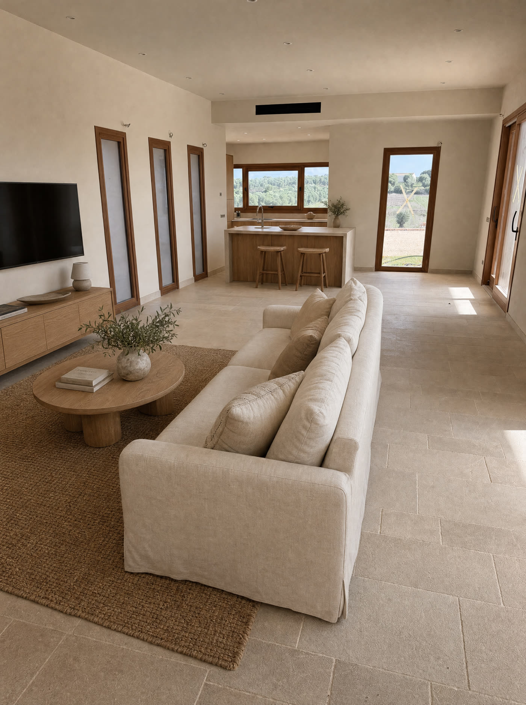
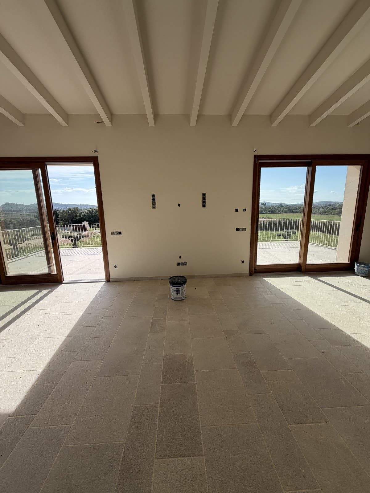
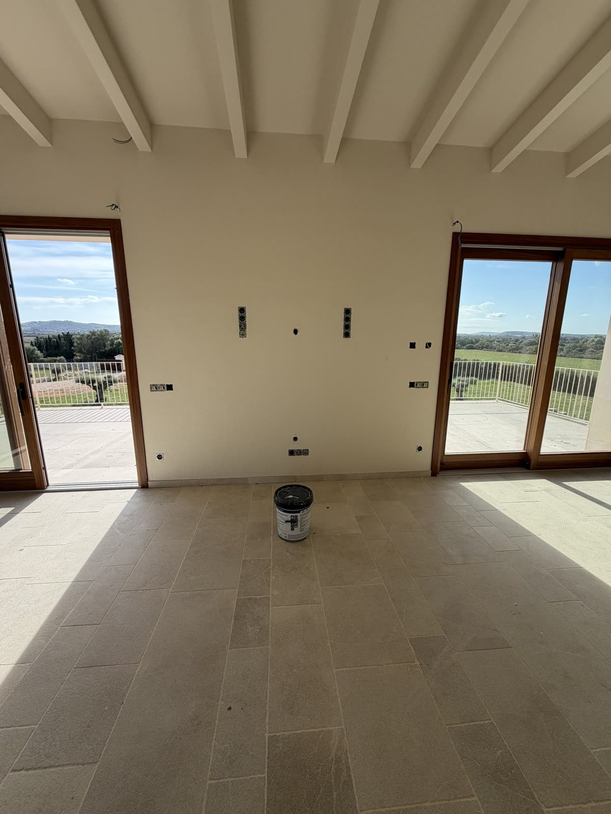
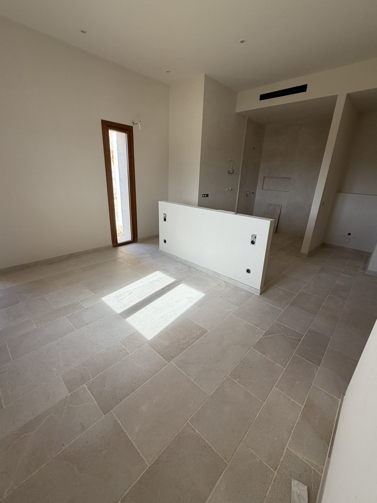

Material real
Así se ve hoy, sin editar
El vuelo de arriba es una recreación. Estas fotografías, en cambio, son exactamente lo que hay — incluida la obra sin terminar.





Antes / después
Salón y cocina, un único espacio abierto
La parte delantera de la sala es el salón; al fondo, junto a la fila de ventanas, está la cocina. Donde hoy sale una manguera del suelo irá la isla de cocina. La imagen de la derecha muestra cómo quedaría — visualización, no estado actual.


Más fotos reales
Dormitorio y terraza



Detrás del medio muro que verás junto a la cama en el vuelo inicial hay, en la realidad, un baño abierto — así es como se ve hoy, en obra.
Ficha
Datos y estado
El inmueble está en fase de acabado, no listo para entrar a vivir. Nada de esto se ha retocado ni disimulado en las fotos reales.